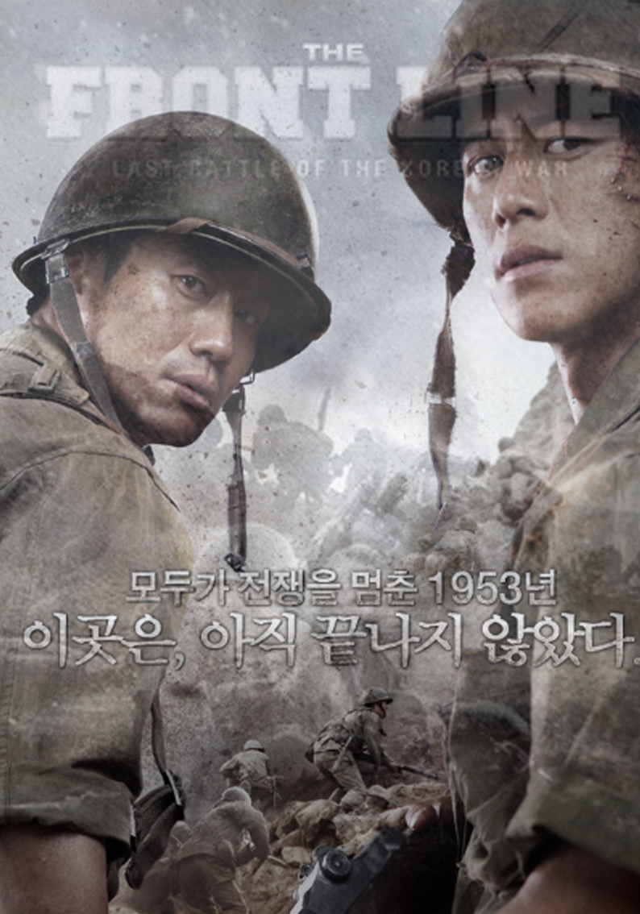

The Front Line
Jang Hoon
Early in the Korean War in 1950 as the North is rolling through South Korea, South Korean privates Eun-pyo (Shin Ha-kyun) and Soo-hyeok (Go Soo) are captured during a battle and brought to North Korean captain Jung-yoon. Jung-yoon declaims to the prisoners that the war will be over in a week and that he knows exactly why they are fighting this devastating war, brother against brother. Afterwards he lets the prisoners go free, so that they can help reconstruct the nation after the war.
The Korean version